finches_hybrid <- read_csv("data/finches_hybridisation.csv")5 Principal component analysis
Learning outcomes
- Understand when PCAs can be useful
- Be able to perform a PCA
- Learn how to plot and interpret a screeplot
- Plot and interpret the loadings for each PCA
5.1 Libraries and functions
Click to expand
5.1.1 Libraries
5.1.2 Functions
5.1.3 Libraries
5.1.4 Functions
5.2 Purpose and aim
This is a statistical technique for reducing the dimensionality of a data set. The technique aims to find a new set of variables for describing the data. These new variables are made from a weighted sum of the old variables. The weighting is chosen so that the new variables can be ranked in terms of importance in that the first new variable is chosen to account for as much variation in the data as possible. Then the second new variable is chosen to account for as much of the remaining variation in the data as possible, and so on until there are as many new variables as old variables.
5.3 Data
The example in this section uses the following data set:
data/finches_hybridisation.csv
These data come from an analysis of gene flow across two finch species (Grant and Grant 2020). They are slightly adapted here for illustrative purposes (the changes are documented in materials/data_preparation.R if you are interested).
Long story short: these data are part of a hybridisation study on finches at the Galapagos Islands. Here, we’ve only included the non-hybrid observations, but feel free to rerun the analysis with all the hybrids!
From many years of studies, going back to Darwin, we now know that the beak shape of the finches are important in their chances for survival. Changes in beak shape have led to new species and this study explored how movement of genes from a rare immigrant species (Geospiza fuliginosa) occurred through two other species (G. fortis and G. scandens). The researchers recorded various morphological traits.
5.4 Load and visualise the data
First, we load the data:
finches_hybrid_py = pd.read_csv("data/finches_hybridisation.csv")Next, we visualise the data:
head(finches_hybrid)# A tibble: 6 × 7
category weight wing tarsus blength bdepth bwidth
<chr> <dbl> <dbl> <dbl> <dbl> <dbl> <dbl>
1 fortis 15.8 67.1 19.6 10.3 8.95 8.32
2 fortis 16 67 17.7 10.4 9.3 8.6
3 fortis 19.2 72.4 19.4 12.1 10.8 10.1
4 fortis 16.1 68 19.1 11.3 10 8.2
5 fortis 18.6 67.5 20.0 11.2 9.5 8.9
6 fortis 17.3 71.1 19.6 11.8 10.3 9.59finches_hybrid_py.head() category weight wing tarsus blength bdepth bwidth
0 fortis 15.84 67.13 19.55 10.30 8.95 8.32
1 fortis 16.00 67.00 17.70 10.40 9.30 8.60
2 fortis 19.25 72.38 19.38 12.10 10.85 10.13
3 fortis 16.10 68.00 19.10 11.30 10.00 8.20
4 fortis 18.60 67.50 19.95 11.15 9.50 8.90We have 7 columns. We’re not going to recreate the published analysis exactly, but for the purpose of this section we will be looking if differences in the measured morphological traits can be attributed to specific categories.
We have 3 different category values:
finches_hybrid %>% distinct(category)# A tibble: 3 × 1
category
<chr>
1 fortis
2 fuliginosa
3 scandens finches_hybrid_py['category'].unique()array(['fortis', 'fuliginosa', 'scandens'], dtype=object)We have 6 continuous response variables, which we’re not going to visualise independently! However, you could look at some of the potential relationships within the data.
For example, looking at body weight (weight) against beak length (blength):
ggplot(finches_hybrid, aes(x = blength, y = weight,
colour = category)) +
geom_point()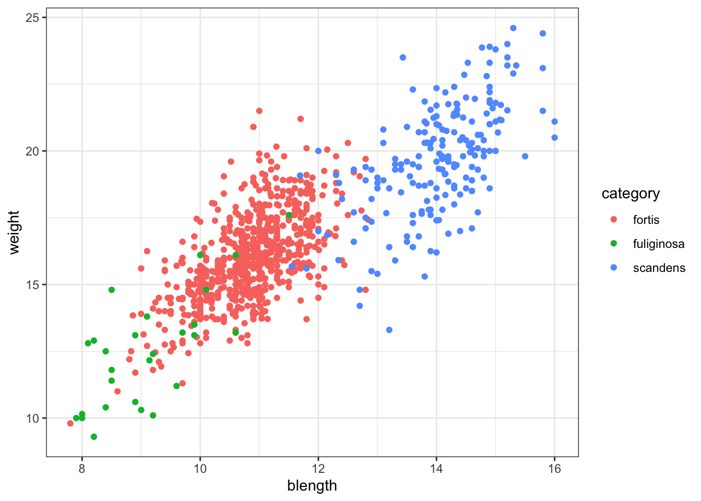
or just weight across the different categories:
ggplot(finches_hybrid, aes(x = category, y = weight)) +
geom_boxplot()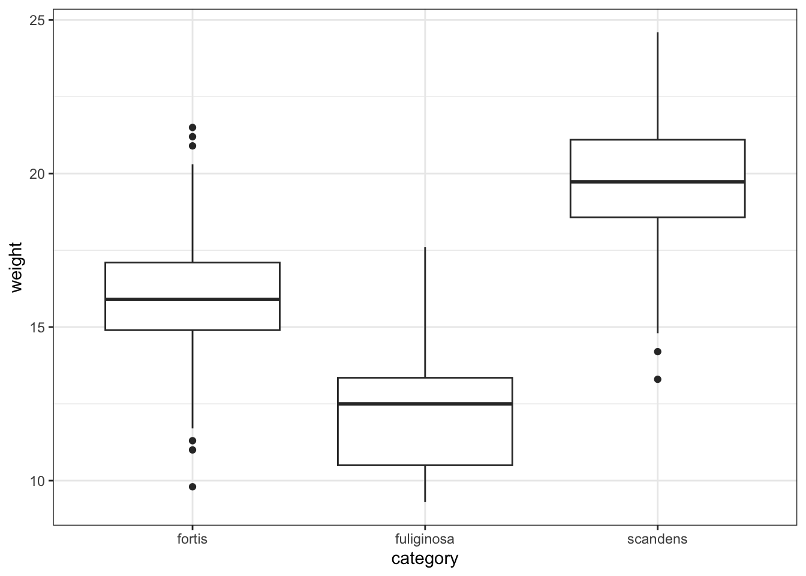
(ggplot(finches_hybrid_py,
aes(x = "blength", y = "weight",
colour = "category")) +
geom_point())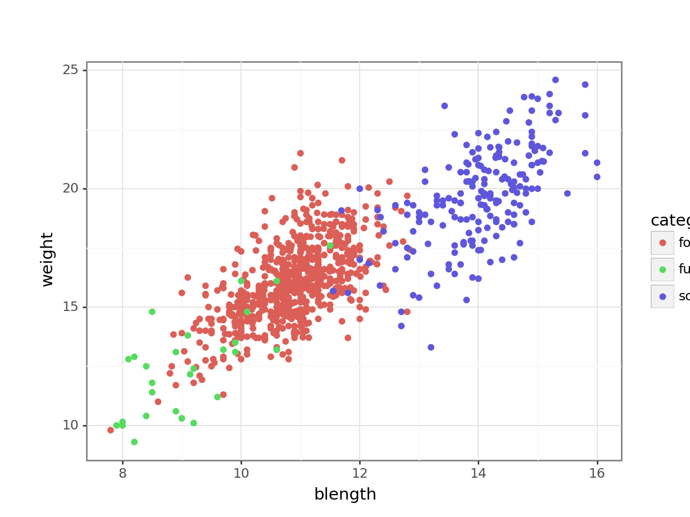
or just weight across the different categories:
(ggplot(finches_hybrid_py,
aes(x = "category", y = "weight")) +
geom_boxplot())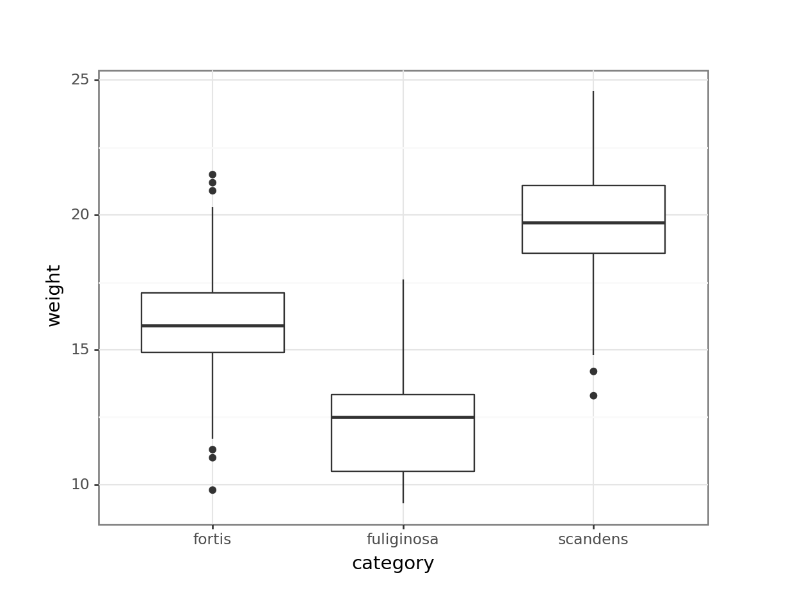
The number of combinations are rather large, given the number of variables we have. Hence it’s a good idea to see if we can “condense” some of variables into new ones.
What we’re doing with a PCA is trying to capture as much variance that exists in the data using a Principal Component (PC). The PC therefore explains some of the variance for each of the individual variables.
I like to compare the PCs to a smoothie: a smoothie might consist of 4 parts apple, 3 parts strawberry, 2 parts blueberry and 1 part grape. Along the lines of that delicious metaphor, one of our Principal components may consist of 4 parts blength, 3 parts weight, 2 parts bdepth and 1 part wing. We don’t know this yet, so let’s go find out.
5.5 Performing the PCA
To perform a PCA, we need to keep a few things in mind:
- We can only calculate principal components for numeric data
- The numeric data need to be on the same scale
This last point of scaling is very important. Measurements can take place at different scales. You shouldn’t compare milimetres and kilogrammes directly, for example. Or seconds and height. That simply does not make sense.
This issue is even more prevalent when comparing gene expression data, for example. Genes can be active at varying levels, but some genes only need (an indeed do) change a tiny amount to elicit an effect, whereas other genes might have to change several fold-changes before something happens.
To compensate for this, we bring all of our data onto the same scale.
In R we can scale our data with the scale() function. We perform the PCA using the prcomp() function. Here we store the output into an object called pca_fit, because we’ll be working with the output later on.
pca_fit <- finches_hybrid %>%
# keep only the numeric columns
select(where(is.numeric)) %>%
# scale the data
scale() %>%
# perform the PCA
prcomp()This is a bit of daunting looking output, but not to worry. We’ll unpack things along the way!
pca_fitStandard deviations (1, .., p=6):
[1] 1.9815712 1.1261455 0.5329781 0.4847379 0.4170304 0.3349943
Rotation (n x k) = (6 x 6):
PC1 PC2 PC3 PC4 PC5 PC6
weight 0.4585415 0.1513150 0.04230031 -0.44900961 0.74497043 -0.09199756
wing 0.4333116 0.1946944 -0.84096840 0.20843413 -0.12117514 0.09475803
tarsus 0.4174676 0.3293946 0.46092626 0.70300481 0.08141532 0.06263195
blength 0.4338157 0.2986440 0.26067134 -0.49214612 -0.64184633 -0.02217340
bdepth 0.3370530 -0.6256540 0.10181858 -0.03331599 -0.02041369 0.69502424
bwidth 0.3548249 -0.5916637 0.01460313 0.13195474 -0.10641317 -0.70362223In Python we can scale our data with the StandardScaler() function from sklearn.preprocessing. We can only scale numerical data, so we need to get those first.
from sklearn.preprocessing import StandardScaler
# select the numeric values
X = finches_hybrid_py.select_dtypes(include = ['float64', 'int64'])
# define the scaler
std_scaler = StandardScaler()
# scale the numeric values
finches_scaled = std_scaler.fit_transform(X)Now that we have the scaled values, we can perform the PCA. We do this using the PCA() function from sklearn.decomposition.
We need to tell it how many principal components we want it to return. We set it to 6 here, which is the number of numerical variables.
from sklearn.decomposition import PCA
# define the number of principal components
n_components = 6
# set the number of principal components
pca = PCA(n_components = n_components)
# perform the PCA
principal_components = pca.fit_transform(finches_scaled)
# create a data frame containing the information
# changing the column names based on the PC
pca_fit_py = pd.DataFrame(data = principal_components, columns=[f'PC{i}' for i in range(1, n_components + 1)])5.5.1 Visualising the principal components
We can figure out how much each principal component is contributing to the amount of variance that is being explained. This is called a screeplot.
pca_fit %>%
tidy(matrix = "eigenvalues") %>%
ggplot(aes(x = PC,
y = percent)) +
geom_point() +
geom_line()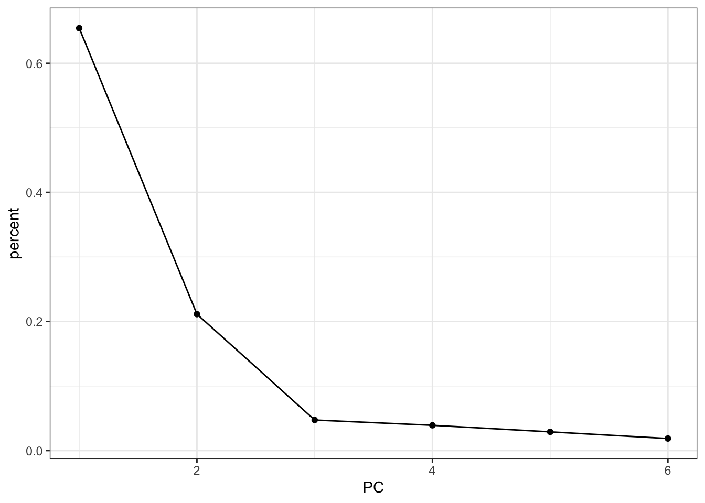
First, we extract the amount of variance explained by each principal component. Next, we convert this to a DataFrame:
explained_variance_pc = pca.explained_variance_ratio_
percent = (
pd.DataFrame({'variance_explained':
(explained_variance_pc * 100),
'PC': [f'PC{i+1}' for i in range(n_components)]})
)
percent.head() variance_explained PC
0 65.443738 PC1
1 21.136728 PC2
2 4.734428 PC3
3 3.916180 PC4
4 2.898573 PC5Next, we can plot this:
(ggplot(percent,
aes(x = "PC", y = "variance_explained")) +
geom_point() +
geom_line(group = 1))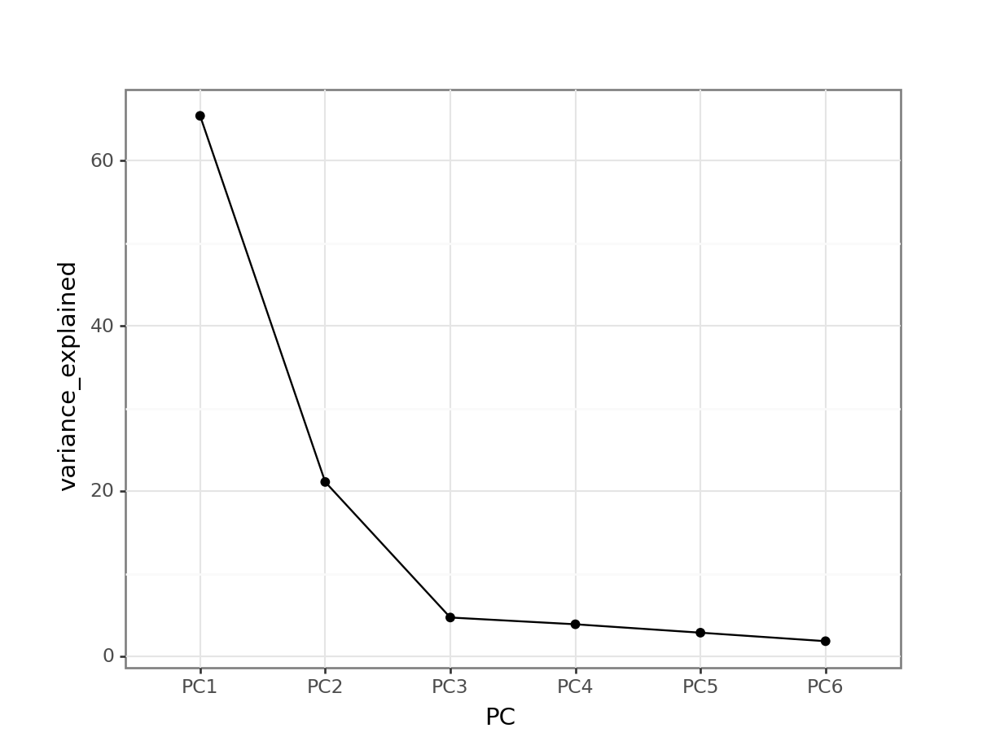
This means that PC1 is able to explain around 65% of the variance in the data. PC2 is able to explain around 21% of the variance in the data, and so forth.
5.5.2 Loadings
Let’s think back to our smoothy metaphor. Remember how the smoothy was made up of various fruits - just like our PCs are made up of parts of our original variables.
Let’s, for the sake of illustrating this, assume the following for PC1:
| parts | variable |
|---|---|
| 4 | blength |
| 1 | tarsus |
Each PC has something called an eigenvector, which in simplest terms is a line with a certain direction and length.
If we want to calculate the length of the eigenvector for PC1, we can employ Pythagoras (well, not directly, just his legacy). This gives:
\(eigenvector \, PC1 = \sqrt{4^2 + 1^2} = 4.12\)
The loading scores for PC1 are the “parts” scaled for this length, i.e.:
| scaled parts | variable |
|---|---|
| 4 / 4.12 = 0.97 | blength |
| 1 / 4.12 = 0.24 | tarsus |
What we can do with these values is plot the loadings for each of the original variables.
It might be helpful to visualise this in context of the original data. We can easily add the original data to the fitted PCs as follows (and plot it):
pca_fit %>%
# add the original data
augment(finches_hybrid) %>%
ggplot(aes(.fittedPC1, .fittedPC2, colour = category)) +
geom_point(size = 1.5)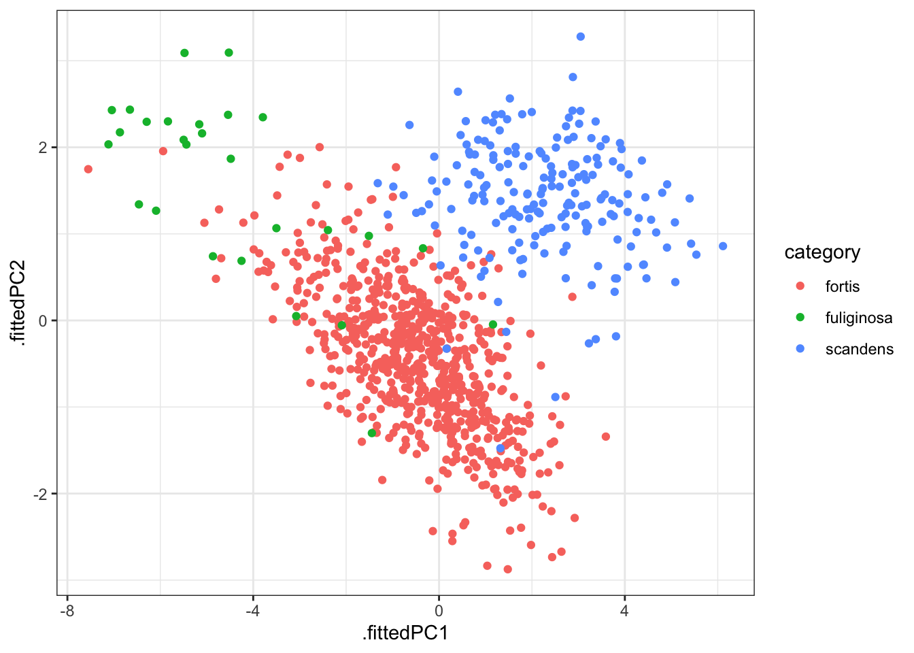
This gives us the individual contributions to PC1 and PC2 for each observation.
If we wanted to know how much each variable is contributing to PC1 and PC2 we would have to use the loadings.
We can extract all the loadings as follows:
pca_fit %>%
tidy(matrix = "loadings")# A tibble: 36 × 3
column PC value
<chr> <dbl> <dbl>
1 weight 1 0.459
2 weight 2 0.151
3 weight 3 0.0423
4 weight 4 -0.449
5 weight 5 0.745
6 weight 6 -0.0920
7 wing 1 0.433
8 wing 2 0.195
9 wing 3 -0.841
10 wing 4 0.208
# ℹ 26 more rowsWe’ll have to reformat this a little, so that we have the values in separate columns. First, we rename some of the columns / values to make things more consistent and clearer:
pca_loadings <- pca_fit %>%
tidy(matrix = "loadings") %>%
rename(terms = column,
component = PC) %>%
mutate(component = paste0("PC", component))
head(pca_loadings)# A tibble: 6 × 3
terms component value
<chr> <chr> <dbl>
1 weight PC1 0.459
2 weight PC2 0.151
3 weight PC3 0.0423
4 weight PC4 -0.449
5 weight PC5 0.745
6 weight PC6 -0.0920Now we can reformat the data:
pca_loadings <- pca_loadings %>%
pivot_wider(names_from = "component",
values_from = "value")
pca_loadings# A tibble: 6 × 7
terms PC1 PC2 PC3 PC4 PC5 PC6
<chr> <dbl> <dbl> <dbl> <dbl> <dbl> <dbl>
1 weight 0.459 0.151 0.0423 -0.449 0.745 -0.0920
2 wing 0.433 0.195 -0.841 0.208 -0.121 0.0948
3 tarsus 0.417 0.329 0.461 0.703 0.0814 0.0626
4 blength 0.434 0.299 0.261 -0.492 -0.642 -0.0222
5 bdepth 0.337 -0.626 0.102 -0.0333 -0.0204 0.695
6 bwidth 0.355 -0.592 0.0146 0.132 -0.106 -0.704 We can then plot this. This is a little bit involved, unfortunately. And not something I’d recommend remembering the code by heart, but we’re doing the following:
- Take the PCA output and add the original data
- Plot this
- Create a line from the origin (
x = 0,y = 0) for each loading - Make it an arrow
- Add the variable name as a label
We define the arrow as follows:
# define arrow style
arrow_style <- arrow(length = unit(2, "mm"),
type = "closed")pca_fit %>%
# add the original data
augment(finches_hybrid) %>%
ggplot() +
geom_point(aes(.fittedPC1, .fittedPC2, colour = category), size = 1.5) +
geom_segment(data = pca_loadings,
aes(xend = PC1, yend = PC2),
x = 0, y = 0,
arrow = arrow_style) +
geom_text(data = pca_loadings,
aes(x = PC1, y = PC2, label = terms),
hjust = 0,
vjust = 1,
size = 5) 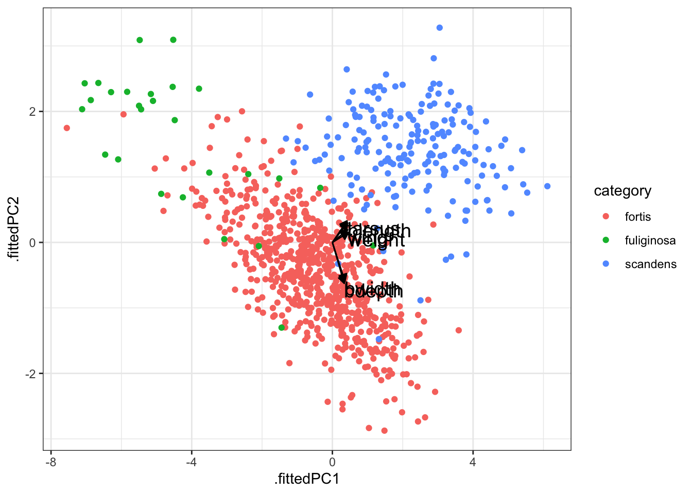
After all that we end up with a rather unclear plot. The 6 variables that contribute to each principal component have very overlapping contributions in PC1. As such, it’s difficult to see which variable contributes what!
The reason why I’m still showing it here is that this kind of plot is very often used in PCA, so at least you can recognise it. If the variables have well-separated contributions across the two principal components, then it can be quite informative.
A better way would be to plot the individual contributions to each principal component as an ordered bar plot. This does require some rejigging of the data again (sorry!).
First, we convert our loadings data back to a “long” format. We also add an extra column, direction, which indicates if the contribution to the principal component is positive or negative.
pca_loadings <- pca_loadings %>%
pivot_longer(cols = -terms,
names_to = "component",
values_to = "value") %>%
# add a column that indicates direction
# (positive or negative)
mutate(direction = ifelse(value < 0, "positive", "negative"))
# have a look at the data
head(pca_loadings)# A tibble: 6 × 4
terms component value direction
<chr> <chr> <dbl> <chr>
1 weight PC1 0.459 negative
2 weight PC2 0.151 negative
3 weight PC3 0.0423 negative
4 weight PC4 -0.449 positive
5 weight PC5 0.745 negative
6 weight PC6 -0.0920 positive We can now visualise this. Here we are using some additional functionality offered by the tidytext library. Make sure to install it, if needed. Then load it.
# we need this library
library(tidytext)
pca_loadings %>%
mutate(terms = tidytext::reorder_within(terms,
abs(value),
component)) %>%
ggplot(aes(x = abs(value), y = terms, fill = direction)) +
geom_col() +
facet_wrap(vars(component), scales = "free_y") +
tidytext::scale_y_reordered()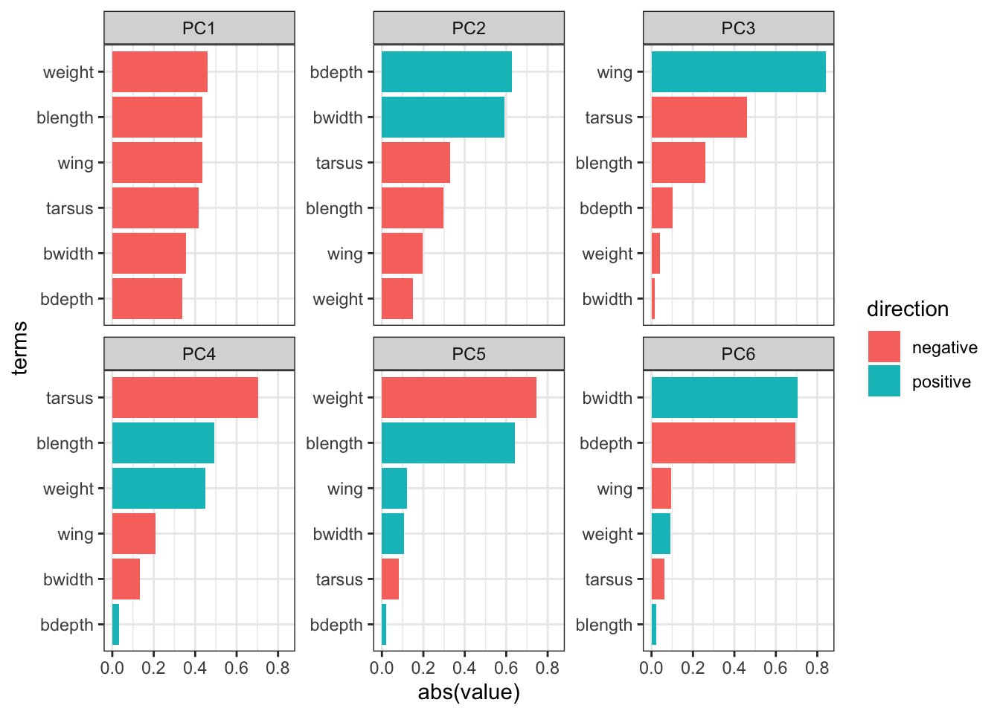
Important
It is important to keep the amount of variance explained by each principal component in mind. For example, PC3 only explains around 4.7 of the variance. So although several variables contribute substantially to PC3, the contribution of PC3 itself remains small.
5.6 Exercises
5.6.1 Penguins
Exercise
Level:
For this exercise we’ll be using the data from data/penguins.csv. These data are from the palmerpenguins package (for more information, see the GitHub page).
I would like you to do the following:
- Load and visualise the data.
- Create a screeplot and see how many PCs would be best.
- Calculate the loadings for PC1 and PC2 and visualise them.
- Any conclusions you might draw from the analysis.
Answer
Load and visualise the data
penguins <- read_csv("data/penguins.csv")Rows: 344 Columns: 8
── Column specification ────────────────────────────────────────────────────────
Delimiter: ","
chr (3): species, island, sex
dbl (5): bill_length_mm, bill_depth_mm, flipper_length_mm, body_mass_g, year
ℹ Use `spec()` to retrieve the full column specification for this data.
ℹ Specify the column types or set `show_col_types = FALSE` to quiet this message.head(penguins)# A tibble: 6 × 8
species island bill_length_mm bill_depth_mm flipper_length_mm body_mass_g
<chr> <chr> <dbl> <dbl> <dbl> <dbl>
1 Adelie Torgersen 39.1 18.7 181 3750
2 Adelie Torgersen 39.5 17.4 186 3800
3 Adelie Torgersen 40.3 18 195 3250
4 Adelie Torgersen NA NA NA NA
5 Adelie Torgersen 36.7 19.3 193 3450
6 Adelie Torgersen 39.3 20.6 190 3650
# ℹ 2 more variables: sex <chr>, year <dbl>We can see that there are different kinds of variables, both categorical and numerical. Also, there appear to be some missing data in the data set, so we probably have to deal with that.
Lastly, we should be careful with the year column: it is recognised as a numerical column (because it contains numbers), but we should view it as a factor, since the years have an ordered, categorical meaning.
To get a better sense of our data we could plot all the numerical variables against each other, to see if there is any possible correlation between them. Doing that one-by-one in ggplot is tedious, so I’m using the pairs() function here. Pretty? No. Effective? Yes.
penguins %>%
select(where(is.numeric)) %>%
pairs()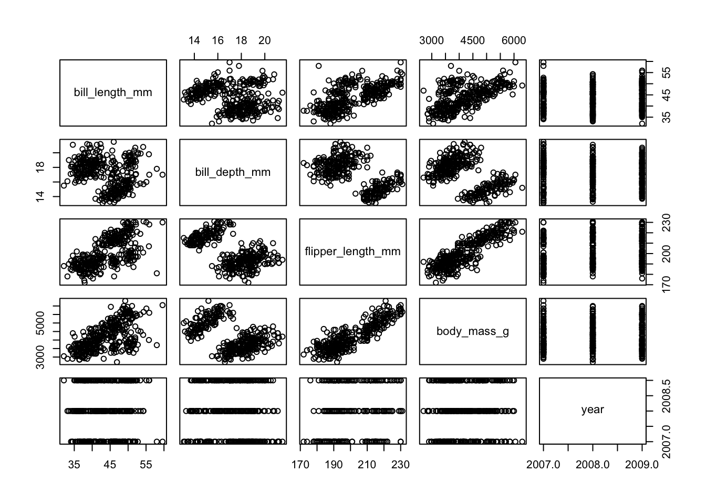
So we see that there is some possible grouping going on and possibly some linear relationships, too. However, there are multiple groups and closely related measurements, so it is not very surprising that there are possible relationships within the data.
Perform the PCA
First, we need to do a little bit of data tidying. We convert year to a factor and deal with the missing values. We’re not dealing with them in a particularly subtle way here, removing all the rows that contain at least one missing value.
In your own research you may want to be more careful and only remove missing values from variables that you using in the PCA (here we include everything).
penguins <- penguins %>%
mutate(year = factor(year)) %>%
drop_na() # remove all rows with missing valuespca_fit <- penguins %>%
# keep only the numeric columns
select(where(is.numeric)) %>%
# scale the data
scale() %>%
# perform the PCA
prcomp()Visualise the PCs
We can visualise the principal components:
pca_fit %>%
tidy(matrix = "eigenvalues") %>%
ggplot(aes(x = PC,
y = percent)) +
geom_point() +
geom_line()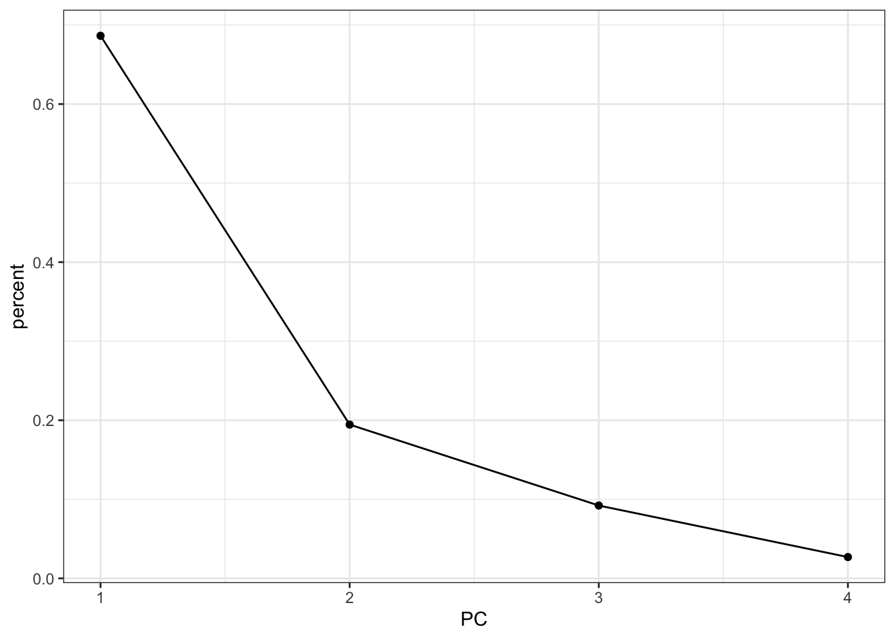
It looks like using the first two principal components is probably capturing the majority of the variance in the data. Combined they account for 90% of the variance.
Loadings
Next, we get the loadings: how much is each original variable contributing to the individual principal components?
We start with some data tidying and wrangling, since we need the data in a “wide” format for the next plot to work:
pca_loadings <- pca_fit %>%
tidy(matrix = "loadings") %>%
rename(terms = column,
component = PC) %>%
mutate(component = paste0("PC", component)) %>%
pivot_wider(names_from = "component",
values_from = "value")
head(pca_loadings)# A tibble: 4 × 5
terms PC1 PC2 PC3 PC4
<chr> <dbl> <dbl> <dbl> <dbl>
1 bill_length_mm 0.454 -0.600 -0.642 0.145
2 bill_depth_mm -0.399 -0.796 0.426 -0.160
3 flipper_length_mm 0.577 -0.00579 0.236 -0.782
4 body_mass_g 0.550 -0.0765 0.592 0.585Arrow style:
# define arrow style
arrow_style <- arrow(length = unit(2, "mm"),
type = "closed")pca_fit %>%
# add the original data
augment(penguins) %>%
ggplot() +
geom_point(aes(.fittedPC1, .fittedPC2, colour = species), size = 1.5) +
geom_segment(data = pca_loadings,
aes(xend = PC1, yend = PC2),
x = 0, y = 0,
arrow = arrow_style) +
geom_text(data = pca_loadings,
aes(x = PC1, y = PC2, label = terms),
hjust = 0,
vjust = 1,
size = 5) 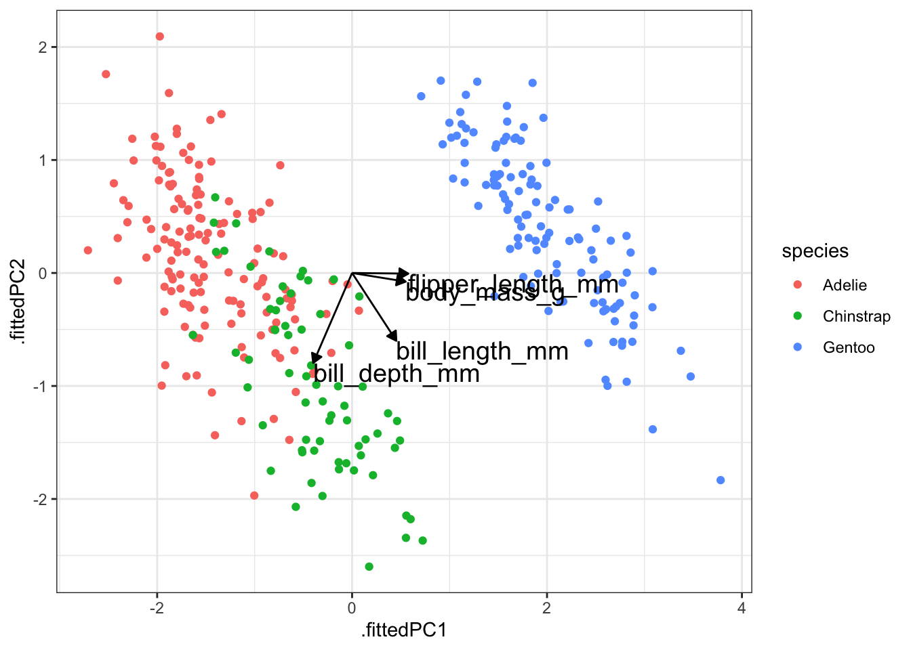
We can also visualise these contributions using a bar plot. We need the data in a slightly different format before we can do this:
pca_loadings <- pca_loadings %>%
pivot_longer(cols = -terms,
names_to = "component",
values_to = "value") %>%
# add a column that indicates direction
# (positive or negative)
mutate(direction = ifelse(value < 0, "positive", "negative"))
# have a look at the data
head(pca_loadings)# A tibble: 6 × 4
terms component value direction
<chr> <chr> <dbl> <chr>
1 bill_length_mm PC1 0.454 negative
2 bill_length_mm PC2 -0.600 positive
3 bill_length_mm PC3 -0.642 positive
4 bill_length_mm PC4 0.145 negative
5 bill_depth_mm PC1 -0.399 positive
6 bill_depth_mm PC2 -0.796 positive But after that, we can visualise it as follows:
# we need this library
library(tidytext)
pca_loadings %>%
mutate(terms = tidytext::reorder_within(terms,
abs(value),
component)) %>%
ggplot(aes(x = abs(value), y = terms, fill = direction)) +
geom_col() +
facet_wrap(vars(component), scales = "free_y") +
tidytext::scale_y_reordered()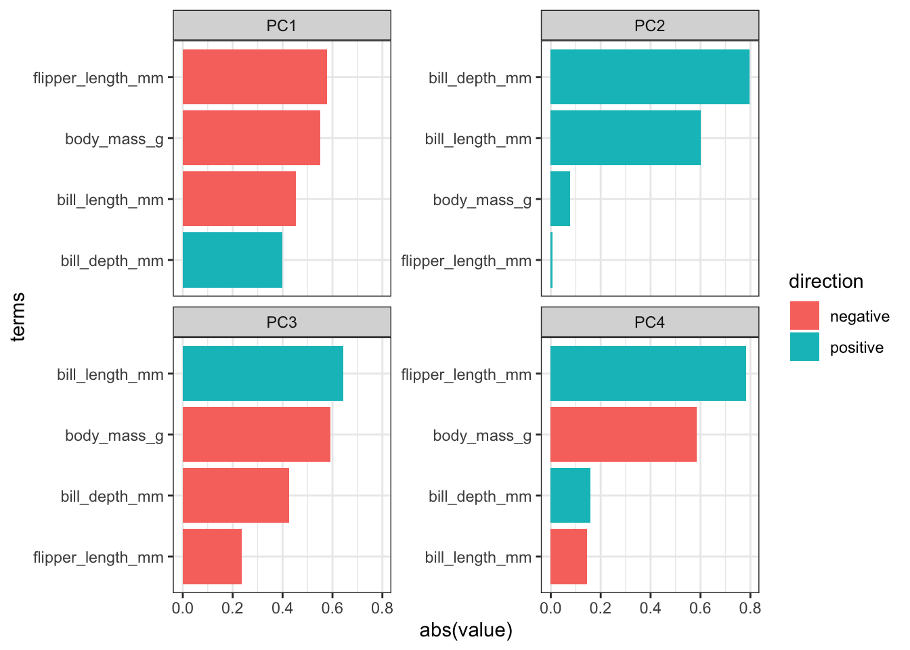
Conclusions
- Load the data.
- Create a screeplot and see how many PCs would be best.
- Calculate the loadings for PC1 and PC2 and visualise them.
- Any conclusions you might draw from the analysis.
Taken together, we can conclude/comment on a few things:
- Endlessly looking at pairwise comparisons between continuous variables probably becomes a bit tedious. An alternative would be to calculate correlations between the variables to get some insight into your data. In the end it depends on how many variables you have and how much you (want to) know about them.
- In this case, I’d say that the first two principal components capture most of the variance in the data.
- The largest contributing variables mostly differ between the first two principal components. The variables that make up PC1 are very similar in terms of contribution, whereas two variables more or less make up PC2 entirely.
The variables flipper_length_mm and body_mass_g contribute pretty much only to PC1 (they are horizontal in the loadings plot), whereas bill_length_mm is contributing a reasonable amount to both PC1 and PC2.
From the data itself we can see that there is clear separation between the three species. The Gentoo penguins separate further once again from the other two species.
5.7 Summary
Key points
- PCA allows you to reduce a large number of variables into fewer principal components.
- Each PC is made up of a combination of the original variables and captures as much of the variance within the data as possible.
- The loadings tell you how much each original variable contributes to each PC.
- A screeplot is a graphical representation of the amount of variance explained by each PC.